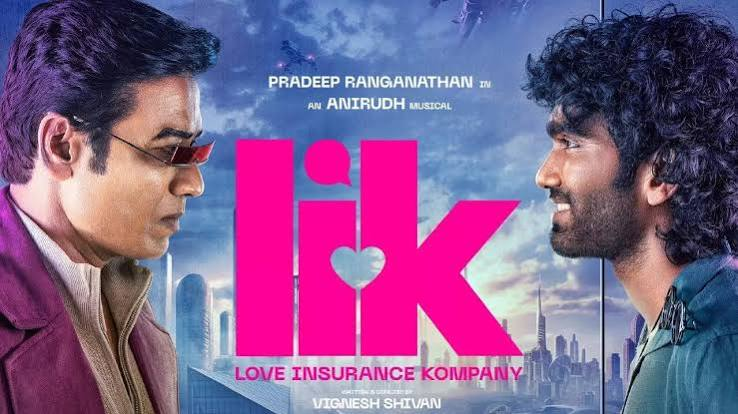
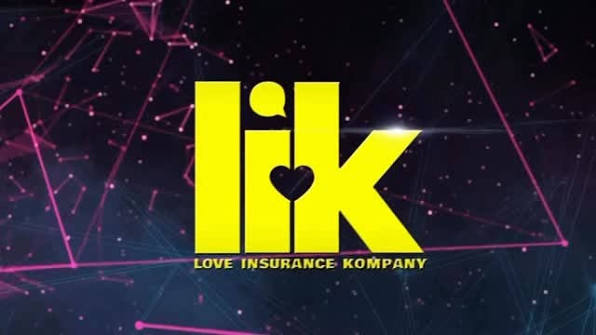
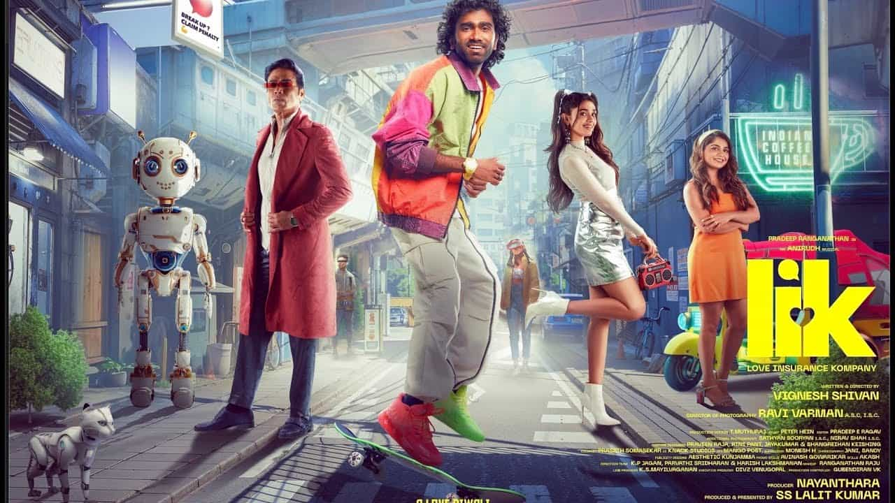
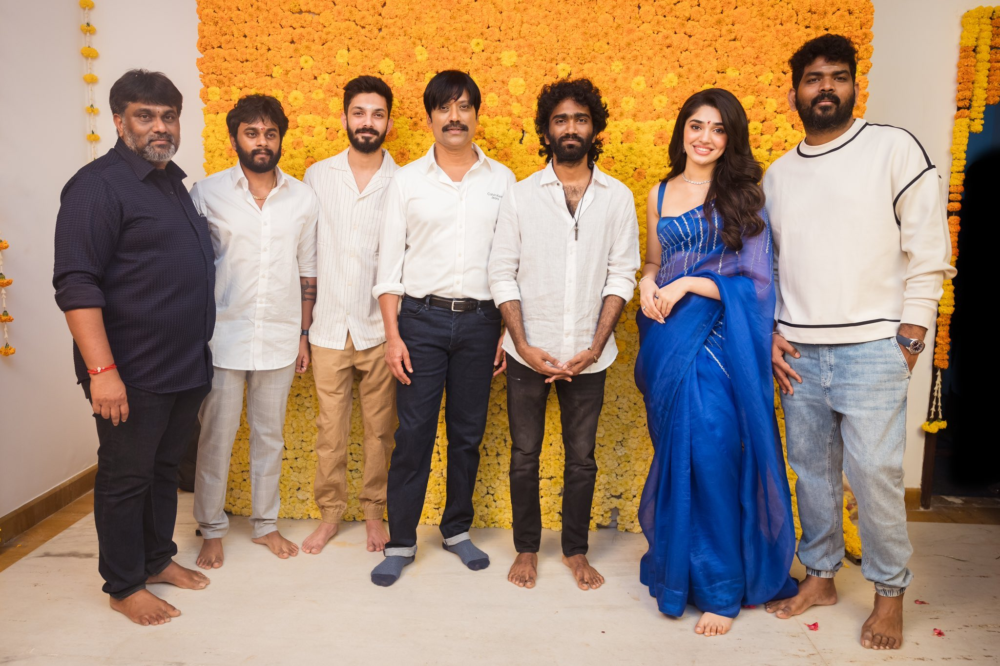

LIK (Love Insurance Kompany) is a 2026 Tamil dystopian sci-fi romantic comedy starring Pradeep Ranganathan, S. J. Suryah, and Krithi Shetty, and directed by Vignesh Shivan. The story explores a futuristic 2040 where an all-powerful app insures and engineers romantic relationships, which is challenged by a man who believes in traditional, organic love
Plot Overview: Set in a high-tech version of Chennai resembling Times Square, society operates entirely via a dating and romance app named LIK. The app calculates your "love meter" based on data. Vibe Vasudevan (Pradeep Ranganathan), who believes in old-school romance, falls for a high-profile social media influencer, Dheema (Krithi Shetty). Their connection is opposed by Suriyan (S. J. Suryah), the dictatorial CEO of the LIK app, who tries to prove their naturally formed relationship is incompatible and bound to fail


The principal photography for Love Insurance Kompany (LIK) spanned a 15-month schedule from January 2024 to April 2025. Director Vignesh Shivan and cinematographer Ravi Varman meticulously mapped out specific domestic and international locations to stitch together the movie’s main backdrop: a futuristic, tech-driven version of Chennai in the year 2040
SingaporeMarina Bay4.8(2.0K)BaySingaporeUsed extensively to construct the high-tech urban environments. This location serves as the primary visual anchor for major musical sequences.Clarke Quay4.5(46.0K)Shopping mallSingaporeThe brightly lit riverfront nightscape was chosen to provide the essential neon aesthetic needed for the film's 2040 timeline.🇲🇾 MalaysiaKuala Lumpur (Urban Spaces): The dense skyscrapers, multi-level highways, and modern steel infrastructure of Kuala Lumpur were filmed to represent the corporate landscape of the "LIK" dating app empire.Pavilion Mall (Bukit Bintang): The high-end shopping district provided the sleek, futuristic consumer hubs where the main characters navigate their tech-driven society.🇮🇳 Tamil Nadu & Puducherry, IndiaIsha Yoga CentreThese natural landscapes were used to depict "Passumai Ulagam" (Green World). In the plot, this location acts as a sanctuary away from the AI-driven world, where people seek a natural connection.UdumalpetLocalityTamil NaduRural and peripheral landscape segments were captured across this region to contrast the mega-city visual designs.Pondicherry Airport4.1(628)AirportPuducherryUsed specifically for its clean, modern structural layouts to shoot key transit facility scenes representing 2040 aviation or travel.If you are tracking down production details, let me know if you would like to:Check out the box office performance or streaming details on Amazon Prime VideoSee the full cast line-up alongside Pradeep Ranganathan, S. J. Suryah, and Krithi ShettyLook into the soundtrack list composed by Anirudh Ravichander
You can book tickets to LIK: Love Insurance Kompany in Chennai using local platforms like BookMyShow or Ticketnew. The film stars Pradeep Ranganathan, Krithi Shetty, and S.J. Suryah and runs for about 2 hours and 36 minutes.Since theatrical runs for older films are limited, if showtimes are no longer available in your local theatres, you can stream it online via Prime Video.If you want to watch this in the cinema
Love Insurance Kompany (LIK) is an Indian Tamil-language science fiction romantic-comedy film. It is not a real insurance provider, so it does not have official customer service or corporate contact details.If you are trying to contact the production team or stream the movie directed by Vignesh Shivan:Production: You can reach out to the production houses, The Rowdy Pictures or Seven Screen Studio, which produced the film.Streaming: The movie is available for streaming on Prime Video.